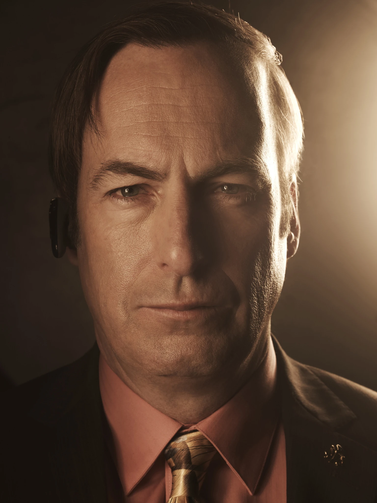

Breaking Bad Characters
Characters
Information
#0991
Walter White
Walter White is a high school chemistry teacher turned methamphetamine manufacturer. Throughout the show, he evolves from a mild-mannered and desperate man facing terminal illness into a ruthless and calculating drug lord, driven by ambition and a desire to secure his family's financial future at any cost.
#B31CH
Jesse Pinkman
Jesse Pinkman, a former student of Walter White, is a troubled but compassionate small-time methamphetamine producer. Initially portrayed as a reckless and lost soul, Jesse undergoes profound character development, grappling with his conscience and seeking redemption amidst the chaos of the drug trade.
#5KY74R
Skyler White
Skyler White, Walter White's wife starts as a supportive and loyal partner but becomes increasingly entangled in her husband's criminal activities. Throughout the series, she transitions from a morally conflicted individual struggling to protect her family to a shrewd and determined figure who confronts the harsh realities of her husband's choices while navigating her own path to survival.
#M1N3R475
Hank Schrader
Hank Schrader, a DEA agent is a tough, tenacious, and sometimes brash law enforcement officer dedicated to fighting the drug trade. As the series progresses, he evolves from a confident and macho figure into a complex character, grappling with personal demons while relentlessly pursuing the elusive Heisenberg, unaware that he's hunting his own brother-in-law, Walter White.
#BR34KF457
Walter White Jr.
Walt Jr., the son of Walter White is a kind-hearted teenager living with cerebral palsy. Despite facing physical challenges, he maintains a positive attitude and serves as a beacon of support for his family, particularly his father, while navigating the complexities of adolescence and the turbulent events unfolding around him.

#1216
Saul Goodman
Saul Goodman, a colorful and morally flexible lawyer is known for his flashy persona and knack for getting his clients out of legal trouble. With his sharp wit and penchant for dubious tactics, Saul provides critical assistance to Walter White and Jesse Pinkman as they navigate the criminal underworld, often serving as a comic relief.
#W47TUH
Mike Ehrmantraut
Mike Ehrmantraut, a former police officer turned fixer and enforcer is a stoic and pragmatic character with a mysterious past. Known for his unwavering professionalism and quiet competence, Mike becomes a key player in the criminal operations orchestrated by Walter White and Gus Fring, showcasing a complex blend of loyalty, ruthlessness, and a deeply ingrained code of honor.